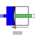

CylinderSimple model of a piston in a cylinder |

|
Information
This information is part of the Modelica Standard Library maintained by the Modelica Association.
This is a simple model of a piston in a cylinder:
The translational flange is connected to the piston, the cylinder has a flowPort at the bottom.
The position of the piston within the cylinder goes from 0 at the bottom to L (length of the cylinder) at the top of the cylinder. If the piston leaves the cylinder, an assertion is triggered.
- A movement of the piston is coupled with volume flow through the flowPort.
- The force at the piston is equal to pressure of the fluid times A (cross section of the piston).
The piston is considered without mass.
Note: Take care of the initial conditions. The position of the piston (relative to the support) should be in the range (0, L). The position of the flange (as well as of the support, if useSupport=true) is influenced by connected components.
Parameters (6)
| medium |
Value: Modelica.Thermal.FluidHeatFlow.Media.Medium() Type: Medium Description: Medium |
|---|---|
| T0 |
Value: Type: Temperature (K) Description: Initial temperature of medium |
| T0fixed |
Value: false Type: Boolean Description: Initial temperature guess value or fixed |
| useSupport |
Value: false Type: Boolean Description: = true, if support flange enabled, otherwise implicitly grounded |
| A |
Value: Type: Area (m²) Description: Cross section of cylinder/piston |
| L |
Value: Type: Length (m) Description: Length of cylinder |
Outputs (2)
| T_port |
Type: Temperature (K) Description: Temperature at flowPort_a |
|---|---|
| T |
Type: Temperature (K) Description: Outlet temperature of medium |
Connectors (3)
| flowPort |
Type: FlowPort_a |
|
|---|---|---|
| flange |
Type: Flange_b Description: Flange of component |
|
| support |
Type: Support Description: Support/housing of component |
Components (1)
| medium |
Type: Medium Description: Medium |
|---|
Used in Examples (1)
|
Modelica.Thermal.FluidHeatFlow.Examples
Two cylinder system |